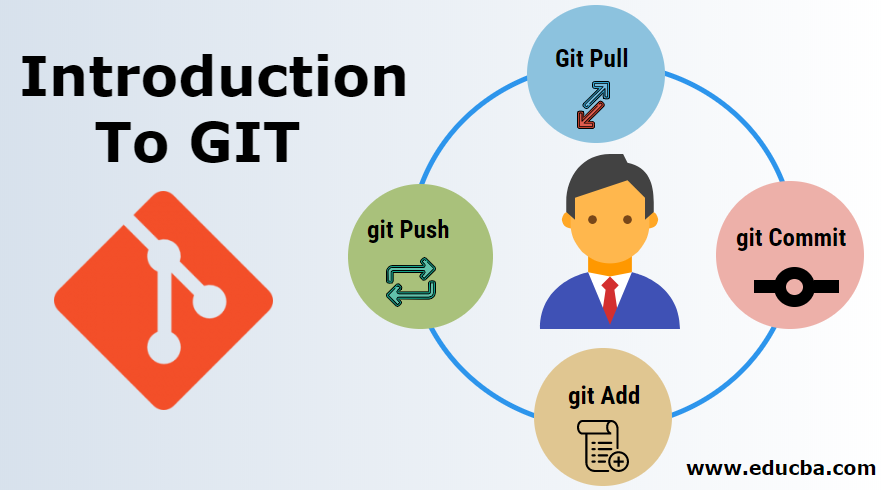

What is GIT?
Opportunities
The system is designed as a set of programs specially designed for their use in scenarios. This makes it convenient to create specialized version control systems based on Git or user interfaces. For example, Cogito is just such an example of a wrapper to Git repositories, and StGit uses Git to manage a collection of fixes (patches).
Architecture
The lower level of git is the so-called content-addressable file system. The git command line tool contains a number of commands for direct manipulation of this repository at a low level. These commands are not needed during normal work with git as a version control system, but are needed to implement complex operations (repair of a damaged repository, and so on), and also make it possible to create your own application based on the git repository.